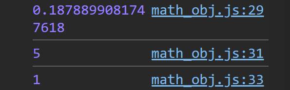

Explore core JavaScript concepts
The Math object provides a collection of math functions and constants
We will start with getting the values for π and e
console.log(Math.PI); console.log(Math.E);
Now let's intitialize some variables so we can see how some of the Math functions work
HTML code
let x = 3.21; let y = 2.98; let z = 5.31; let a = 4.69; let b = 9; let c;
Here are some of the Math functions
// Round 'x' to the nearest integer
x = Math.round(x); // Rounds 3.21 to the nearest integer (3)
console.log(x);
// Round 'y' down to the nearest integer (floor)
y = Math.floor(y); // Floors 2.98 down to the nearest integer (2)
console.log(y);
// Round 'z' up to the nearest integer (ceil)
z = Math.ceil(z); // Ceils 5.31 up to the nearest integer (6)
console.log(z); // Output: 6
// Round 'a' up to the nearest integer (ceil)
a = Math.ceil(a); // Ceils 4.69 up to the nearest integer (5)
console.log(a);
This is how you use sqaure root
b = Math.sqrt(b);
console.log(b);
This is how you use powers
c = Math.pow(2, 4);
console.log(c)
Generate random numbers and min and max
console.log(Math.random()); // Random number between 0 and 1
console.log(Math.max(1, 2, 3, 4, 5));
console.log(Math.min(1,2,3,4,5))

Try to code a dice roller like this